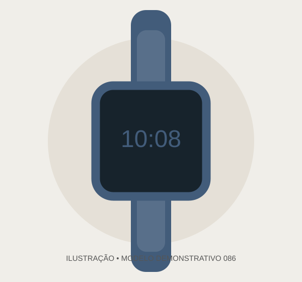

Seu tempo.
Sua assinatura.
Descubra 100 conceitos de relógios, do clássico ao esportivo. Uma experiência de compra criada para impressionar.
Explorar coleção Catálogo ilustrativo para apresentação comercial.
Encontre o seu estilo
Explore os modelos ilustrativos. Fotos e especificações reais serão adicionadas após validação.
Nenhum relógio encontrado. Experimente outra busca.
Mais do que horas.
Uma expressão pessoal.
A CHRONOS PRIME é uma marca fictícia criada para demonstrar como uma relojoaria pode apresentar seu catálogo online com elegância e praticidade.
Um futuro lojista poderá substituir identidade, produtos, imagens, contatos e informações comerciais por dados reais.
Como funciona?
Posso comprar estes relógios?
Não. Esta é uma demonstração e não processa vendas reais.
O Pix já recebe pagamentos?
Não. É necessário configurar dados reais e uma integração de pagamento segura para confirmar cobranças automaticamente.
Posso personalizar esta loja?
Sim. O projeto foi estruturado para adaptar logotipo, contatos, catálogo e cores.
O próximo capítulo começa aqui.
Configure o número comercial para habilitar o atendimento pelo WhatsApp.